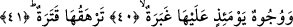

göre ise âyetin mânâsı şöyledir: O gün bir takım yüzler parlak, güleç ve kâfirlerin
sevincinden kurtulmuş olmaktan dolayı sevinçli ve kendi nefisleriyle ferahtırlar.
İbn Tâhir (rh.) şöyle diyor: Allah bu yüzlerden gaflet perdelerini kaldırmıştır. Bundan
dolayı o yüzler hakka yaklaştıkları için gülmüşler, O’nu müşâhede ettikleri için sevinç
duymuşlardır.
İbn Ata (rh.) âyeti şöyle tefsir ediyor: Bu yüzler o gün Mevlalarına baktığı için
sevinç duymuşlar ve o yüzleri Allah’ın hoşnutluğu güldürmüştür.
Sehl (rh.) ise âyete şöyle mânâ veriyor. O gün bir takım yüzler parlak, tevhid nuruyla
ve sünnete uyma nuruyla aydınlık ve nurludur.
et-Te’vilatu’n-Necmiyye’de bu âyetler şöyle anlaşılıyor: O gün ervah ve esrar sâhibi
olan yüzler ve ilahi mârifetleriyle lahuti hakikatleri bilen âriflerin yüzleri, ilahi
ilimlerin ve hikmetlerin nurlarıyla parlak, mükâşefâtın nimetleri ve muşahedâtın
bağışları ile sevinçlidir.
Fakir (Bursevî)’nin kanâatine göre o gün birtakım yüzler vardır ki parlaktır. Çünkü bu
yüzler, dünyada iken tezkiye ve tasfiyede bulundukları ve kendilerindeki bulanıklığı
giderdiklerinden dolayı bembeyazdırlar. Bu yüzler aynı zamanda güleçtir. Çünkü dünya
hayatında iken Allah için ağlamışlardır. Hatta ağlaya ağlaya Allah’tan başkasını
görmeyecek dereceye gelip Allah dışında hiçbir şeyi görmeyen kör hâline gelmişlerdir.
Tıpkı Hz. Şuayb ve Hz. Yakub gibi. Bu yüzler aynı zamanda müjde almış ve sevinmiş
yüzlerdir. Çünkü dünyada iken korku duymakta idiler. Şimdi bu korkularına bedel
âhirette güven içindedirler, sevinçleri bundan dolayıdır. Bu nedenle onlara hem dünya
ve hem de âhiret hayatında müjdeler verilmiştir. Onlara melekler şöyle hitap
etmişlerdir: “Şüphesiz Rabbimiz Allah’tır deyip sonra dosdoğru yolda yürüyenlerin
üzerine melekler iner. Onlara: Korkmayın, üzülmeyin, size vaadolunan cennetle
sevinin! derler” (Fussilet 41/30) Ayrıca onlara Cennet müjdesinin yanında Allah
Teâlâ’yı görme müjdesi de verilir. Gülmek anlamına gelen “dahk” yüzün yayılması,
insanın içinde duymuş olduğu sevinçten dolayı dişlerinin görülmesi demektir. İnsan
sevinç duyunca dişleri görüldüğü için ön dişlere “davahik” ismi verilmektedir. Âyette
olduğu gibi mücerred sevinç ve sevinme noktasında da bu kelime kullanılır.
Rağıb Isfahânî’nin açıklamasına göre “istebşera” fiili “filanca kişi kendini
sevindirecek ferahlı bir şeyi buldu” demektir. O kişinin cildi sevinçli haberi yüzünün
derisini germek sûretiyle haber verir. Bu şöyle olur: İnsan ruhu herhangi bir haberden
sevinç duyunca vücudunun kanı, suyun, ağacın damarlarına doğru yürümesi gibi yüzüne
hücûm eder. Böylece kişinin sevinç duyduğu yüzünden belli olur.
Kâşifî demiştir ki: “dâhiketün” gülen, “müstebşiratün” ise Cehennemden kurtuluş ve
Cennet bahçelerine kavuşmaktan huzurlu ve sevinçli demektir.